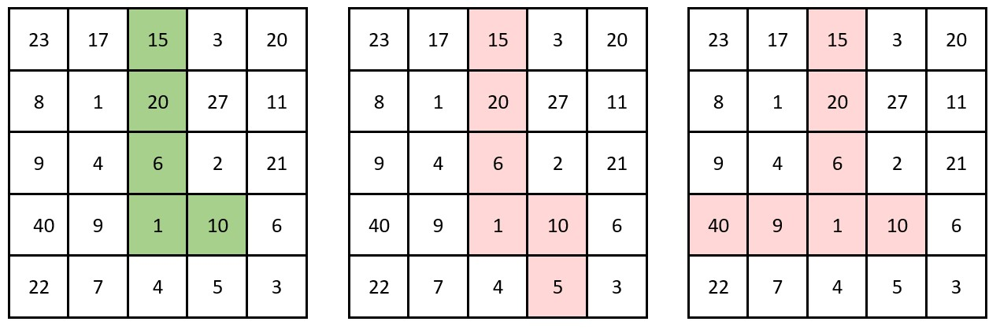
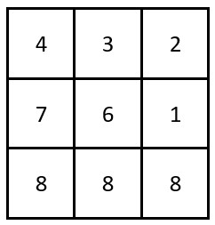

| Category | Difficulty | Likes | Dislikes |
|---|---|---|---|
| Algorithms | Medium | 197 | 406 |
array | matrix | prefix-sum
You are given a 2D integer array grid of size m x n, where each cell contains a positive integer.
A cornered path is defined as a set of adjacent cells with at most one turn. More specifically, the path should exclusively move either horizontally or vertically up to the turn (if there is one), without returning to a previously visited cell. After the turn, the path will then move exclusively in the alternate direction: move vertically if it moved horizontally, and vice versa, also without returning to a previously visited cell.
The product of a path is defined as the product of all the values in the path.
Return the maximum number of trailing zeros in the product of a cornered path found in grid.
Note:
Example 1:

Input: grid = [[23,17,15,3,20],[8,1,20,27,11],[9,4,6,2,21],[40,9,1,10,6],[22,7,4,5,3]]
Output: 3
Explanation: The grid on the left shows a valid cornered path.
It has a product of 15 * 20 * 6 * 1 * 10 = 18000 which has 3 trailing zeros.
It can be shown that this is the maximum trailing zeros in the product of a cornered path.
The grid in the middle is not a cornered path as it has more than one turn.
The grid on the right is not a cornered path as it requires a return to a previously visited cell.Example 2:

Input: grid = [[4,3,2],[7,6,1],[8,8,8]]
Output: 0
Explanation: The grid is shown in the figure above.
There are no cornered paths in the grid that result in a product with a trailing zero.
Constraints:
m == grid.lengthn == grid[i].length1 <= m, n <= 1051 <= m * n <= 1051 <= grid[i][j] <= 1000